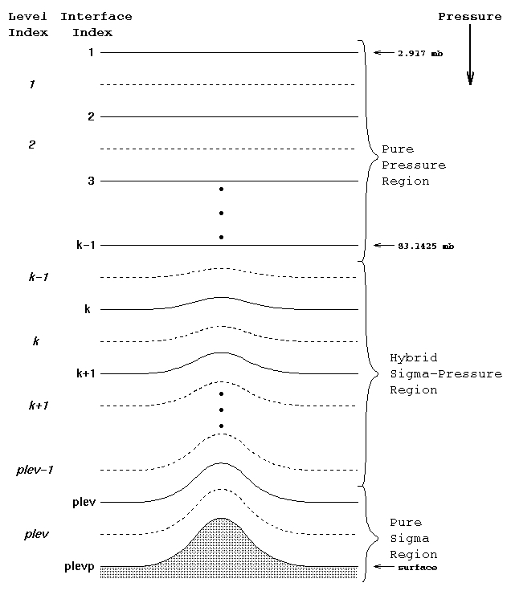

23. Atmospheric Dynamics in the CESM#
This notebook is an extension of The Climate Laboratory by Brian E. J. Rose, University at Albany. Notebook by Rachel H. White, University of British Columbia (https://www.eoas.ubc.ca/people/rachelwhite)
There are ‘Discussion points’ and ‘Exercises’ throughout these notebooks. You should come to class prepared to discuss your thoughts on the Discussion points.
Learning goals:
Be able to analyse atmospheric dynamics in the CESM climate model data
Compare the CESM model to re-analysis data (best guess of observations for most atmospheric dynamics)
23.1. About the CESM#
23.1.1. Key components of CESM:#
see http://www.cesm.ucar.edu/models/cesm1.2/ for more info
Atmospheric model (AGCM)
Community Atmsophere Model (CAM)
Ocean model (OGCM)
Parallel Ocean Program (POP)
Land surface model
Community Land Model (CLM)
Sea ice model
Community Ice CodE (CICE)
You need to be connected to the internet to run the code in this notebook
You can browse the available data through a web interface here:
http://thredds.atmos.albany.edu:8080/thredds/catalog.html
Within this folder called CESM archive, you will find another folder called som_input which contains all the input files.
23.2. Large-scale circulation in the CESM#
import numpy as np
import matplotlib.pyplot as plt
import matplotlib
import xarray as xr
import scipy as sp
from scipy import integrate
import Ngl
import cartopy
import cartopy.util
import cartopy.crs as ccrs
%matplotlib inline
We can compare the CESM model results to those in the Hartmann book we are reading (see in particular chapter 6), to see how well the CESM model reproduces observed circulation
cesm_data_path = "http://thredds.atmos.albany.edu:8080/thredds/dodsC/CESMA/"
cesm_input_path = cesm_data_path + "som_input/"
23.2.1. Zonal mean circulation#
# Let's compare the zonal mean circulation
#atmfile = xr.open_dataset( cesm_data_path + 'som_cam5/' + 'atm/hist/' + 'som_cam5.cam.h0.0030-12.nc')
atmfile = xr.open_dataset( cesm_data_path + "cpl_1850_f19/concatenated/cpl_1850_f19.cam.h0.nc")
atmfile
# we want to take the zonal mean
zmU = atmfile.U.mean(dim='lon')
# Now we want to take seasonal means
zmU_seas = {}
for label,data in zmU.groupby('time.season'):
zmU_seas[label] = data.mean(dim='time')
The groupby function (https://xarray.pydata.org/en/stable/groupby.html) is very useful for quickly separating data. Explore the output from zmU.grouby(‘time.season’), in order to understand what data is in zmU_seas,
Discussion point: Why is this not an exact seasonal climatology? (Hint: Think about weighting.)
Let’s make a plot! Remember xarray is able to automatically generate labeled plots. This is very handy for “quick and dirty” investigation of the data:
zmU_seas['DJF'].plot()
But this is not the best way to look at zonal cross-sections. For a start, the plot is upside down, as pressure decreases with height. We can make a function to create a nicer looking plot:
def plot_zonal_mean(plotvar,title):
# We can change the size/aspect ratio of our plot
# Note that these change values globally, i.e. throughout your notebook
matplotlib.rcParams['figure.figsize']=(10,4)
# and change the default font size
matplotlib.rcParams.update({'font.size':16})
# Plot DJF and then JJA
for seas in ['DJF','JJA']:
# use contourf to plot filled contours
# set the contour levels to be plotted as an array from -70 to 70 at intervals of 5
# note that to include to top value of 70, you must select a value slightly above 70
plotvar[seas].plot.contourf(levels=np.arange(-70, 71,5),extend='both')
# change the y scale to be logarithmic
plt.yscale('log')
# invert the axis so it represents height, but shows pressure
plt.gca().invert_yaxis()
# set the top and bottom pressure of the plot
plt.ylim(1000,10)
# set the y axis tick labels
plt.gca().set_yticks([1000,500,200,100,50,20,10])
plt.gca().set_yticklabels(['1000','500','200','100','50','20','10'])
# add a title
plt.title(title + ' ' + seas + ' zonal mean zonal wind')
plt.show()
plot_zonal_mean(zmU_seas,'CESM')
## Compare to a plot created from NCER re-analysis data
ncep_url = "http://www.esrl.noaa.gov/psd/thredds/dodsC/Datasets/ncep.reanalysis.derived/"
ncep_uwnd = xr.open_dataset(ncep_url + "pressure/uwnd.mon.1981-2010.ltm.nc")
# This is already a long term mean (ltm) but we still need to calculate means for each season:
ncep_uwnd_seas = {}
ncep_uwnd_seas['DJF'] = ncep_uwnd.uwnd.isel(time=[0,1,11]).mean(dim='time').mean(dim='lon') # selecting months 0 (Jan), 1 (Feb), and 11 (Dec)
ncep_uwnd_seas['JJA'] = ncep_uwnd.uwnd.isel(time=[5,6,7]).mean(dim='time').mean(dim='lon') # selecting months 5 (Jun), 6 (Jul), and 7 (Aug)
plot_zonal_mean(ncep_uwnd_seas,'NCEP reanalysis')
When completing model evaluation like this, it is often useful to plot both the model and the re-analysis or observations on the same plot, so you can better evaluate model biases. Even better is to plot the model bias itself, but this involves re-gridding the datasets to be on the same grid (same latitudes, longitudes and pressure levels).
def plot_zonal_mean_comp(plotvarmodel,plotvarNCEP,title):
# We can change the size/aspect ratio of our plot
# Note that these change values globally, i.e. throughout your notebook
matplotlib.rcParams['figure.figsize']=(10,4)
# and change the default font size
matplotlib.rcParams.update({'font.size':16})
# Plot DJF and then JJA
for seas in ['DJF','JJA']:
# use contourf to plot filled contours
# set the contour levels to be plotted as an array from -70 to 70 at intervals of 5
# note that to include to top value of 70, you must select a value slightly above 70
plotvarmodel[seas].plot.contourf(levels=np.arange(-70, 71,5),extend='both')
plotvarmodel[seas].plot.contour(levels=np.arange(-70, 71,5),extend='both',colors='lightgrey')
plotvarNCEP[seas].plot.contour(levels=np.arange(-70, 71,5),extend='both',colors='k')
# change the y scale to be logarithmic
plt.yscale('log')
# invert the axis so it represents height, but shows pressure
plt.gca().invert_yaxis()
# set the top and bottom pressure of the plot
plt.ylim(1000,10)
# set the y axis tick labels
plt.gca().set_yticks([1000,500,200,100,50,20,10])
plt.gca().set_yticklabels(['1000','500','200','100','50','20','10'])
# add a title
plt.title(title + ' ' + seas + ' zonal mean zonal wind')
plt.show()
plot_zonal_mean_comp(zmU_seas,ncep_uwnd_seas,'CESM and NCEP')
Discussion point: Compare the model to the re-analysis “observations”. How well does the model do? What might affect the model results - think about what we know about the experiment cpl_1850_f19 from before.
Extra exercise: try calculating an exact seasonal mean, and compare the differences.
Now let’s look at the meridional mass streamfunction, as in figure 6.5 in the Hartmann book. This is a measure of the strength of the meridional overturning circulation. Meridional mass streamfunction isn’t an output of the model. So we need to calculate it. Similar to matlab, if there is a variable you want to calculate, it is likely someone has already made a package that calculate it. In this case we can use a function from the TropD package: https://tropd.github.io/pytropd/index.html This function is shown below.
def TropD_Calculate_StreamFunction(V, lat, lev):
''' Calculate streamfunction by integrating meridional wind from top of the atmosphere to surface
Args:
V: array of zonal-mean meridional wind with dimensions (lat, lev)
lat: equally spaced latitude array
lev: vertical level array in hPa
Returns:
ndarray: the streamfunction psi(lat,lev)
'''
EarthRadius = 6371220.0
EarthGrav = 9.80616
B = np.ones(np.shape(V))
B = np.where(np.isnan(V),0,1) # edited RHW
psi = np.zeros(np.shape(V))
# RHW edit: use tile to repeat cos(lat) len(lev) times, rather than repeat and then reshape
COS = np.tile(np.cos(lat*np.pi/180),[len(lev),1])
psi = (EarthRadius/EarthGrav) * 2 * np.pi \
* sp.integrate.cumtrapz(B * V * COS, lev*100, axis=0, initial=0)
return psi
# We need seasonal mean, zonal mean, meridional wind
zmV = atmfile.V.mean(dim='lon')
# Now we want to take seasonal means
zmV_seas = {}
for label,data in zmV.groupby('time.season'):
zmV_seas[label] = data.mean(dim='time')
# Calculate mean meridional mass streamfunction on seasonal means:
psi_cesm={}
for iseas in ['DJF','JJA']:
psi_cesm[iseas] = TropD_Calculate_StreamFunction(zmV_seas[iseas], zmV_seas[iseas].lat, zmV_seas[iseas].lev)
# now add the annual mean:
psi_cesm['ANN'] = TropD_Calculate_StreamFunction(zmV.mean(dim='time'), zmV.lat, zmV.lev)
The output from TropD_Calculate_StreamFunction is a numpy array, not an xarray - this is often the case for functions from downloaded packages - so we have two options:
turn it into an xarray since we know the coordinate and dimensions. or 2. plot by hand since we’re going to have to adjust the plot anyway. For now, here’s option 2:
matplotlib.rcParams['figure.figsize']=(8,4)
matplotlib.rcParams.update({'font.size':16})
for iseas in ['DJF','JJA','ANN']:
plt.contourf(zmV.lat, zmV.lev,psi_cesm[iseas],levels = np.arange(-20E10,21E10,2E10),cmap='RdBu_r')
plt.contour(zmV.lat, zmV.lev,psi_cesm[iseas],levels = np.arange(-20E10,21E10,2E10),colors='lightgrey',linewidths=1)
plt.show()
Exercise: Alter this code to improve this figure. Access the NCEP v field, calculate meridional streamfunction, and add in the NCEP meridional overturning streamfunction to this plot.
Discussion point: How well does the model do in comparison with the observations?
For those of you interested in creating xarrays. See https://xarray.pydata.org/en/stable/data-structures.html for more detail, and the basics are shown below:
# First let's combine the seasons into a single np array, the first dimension will be season with our
# 3 'seasons' of interest: 'DJF','JJA','ANN'
psi_cesm_array = np.zeros([3,len(zmV.lev),len(zmV.lat)])
# now fill with the values: note we now need to remember what index we use for each season here - we will add this
# information back in later, so we store it in seas_array
index=0
seas_array = ['DJF','JJA','ANN']
for iseas in seas_array:
psi_cesm_array[index,:,:] = psi_cesm[iseas]; index+=1 # this increments index by 1
psi_cesm_xr = xr.DataArray(psi_cesm_array,
dims=['time','lev','lat'],
coords={'time':seas_array,'lev':zmV.lev,'lat':zmV.lat})
Exercise: Alter the code below to check this dataarray gives the same results as before.
# Check this dataarray gives the same results as before
psi_cesm_xr.sel(time='ANN').plot.contour()
23.2.2. Eddy transport in CESM#
Moving away from zonal means, we can look at eddy transports. We can calculate the total vT from the model output:
vT = (atmfile.V * atmfile.T).mean(dim='lon')
# estimate the seasonal climatology
zmVT_seas = {}
zmV_seas = {}
zmT_seas = {}
for label,data in vT.groupby('time.season'):
zmVT_seas[label] = data.mean(dim='time')
for label,data in atmfile.V.groupby('time.season'):
zmV_seas[label] = data.mean(dim='time')
for label,data in atmfile.T.groupby('time.season'):
zmT_seas[label] = data.mean(dim='time')
Exercise: Now calculate and plot vT + v’T’ as per equation 6.13 (Hartmann) to compare with figure 6.9 (Hartmann).
Discussion point: How does the CESM model eddy transport compare to the “observed” values shown in Fig. 6.9? Think about the time resolution of the CESM model output (you may need to print/explore atmfields to remind yourself of this), and why this method of calculating vT could underestimate meridional heat transport.
Models such as CESM actually have variables such as \(\overline{vT}\) as an output. This is an average over each timestep of vT and therefore provides a more accurate estimate of true vT than calculating it “offline” (i.e. after the model has run) without having to output variables on every timestep, which would take up too much space.
Exercise Find the vT field in atmfile, and then calculate and plot v’T’ + vT using vT directly from the model. Compare to the observations and our previous plot.
Exercise Explore the model and plot some other meridional transports, comparing the model calculated values with those calcualted offline
23.2.3. Vertical levels#
Look at the y-axis in our first plot of zonal mean zonal wind. Notice that the variable is not ‘pressure’, it’s ‘hybrid level at midpoints’. If you explore the dimension ‘lev’ in atmfile you find the units are ‘level’ and the standard name is: ‘atmosphere_hybrid_sigma_pressure_coordinate’. The CESM model default outputs are on model levels, which are not isobaric surfaces. This version of the CESM uses what’s known as a hybrid vertical co-ordinate: near the surface, the levels follow the terrain, often known as a ‘sigma’ co-ordinate; this makes calculation of the dynamics near the surface simpler. At the top of the model, the levels are isobaric surfaces; in between they are a hybrid, or “sigma-pressure’. This is illustrated in the schematic below.
Figure | The hybrid sigma-pressure co-ordinates in this version of the CESM model.
For more accurate plotting we need to convert the data from these model co-ordinates onto pressure levels, by using the identity p(t,k,j,i) = a(k)*p0 + b(k)*ps(t,j,i), where a and b are parameters (functions of level only). Handily NCAR (the developers of the CESM model) have built functions to do this for us, originally in NCL (the NCAR Command Language) and now in python (https://www.pyngl.ucar.edu/Functions/Ngl.vinth2p.shtml).
This can take quite some time to run, particularly if you want to convert monthly or daily data onto pressure levels. Ideally this should be written as a separate function and run outside of your notebooks, but we will do this once here as an example.
# the parameters hyam and hybm are parameters used to calculate the pressure from the level value
hyam = atmfile['hyam']
hybm = atmfile['hybm']
T = atmfile['T'].mean(dim='time')
psfc = atmfile['PS'].mean(dim='time')
U = atmfile['U'].mean(dim='time')
p0mb = atmfile['P0']/100.0
# Selection of the pressure levels you would like the data on
# if you are plotting with log pressure as the vertical coodinate it is good to space yourlevels to be at least
# approximately equally space in log-pressure coordinates.
pnew = [1000.,850.,700.,600.,500.,400.,300.,250.,200.,150.,100.,70.,50.,30.,20.,10.,5.]
Upres = Ngl.vinth2p(U, hyam, hybm, pnew, psfc, 1, p0mb, 1, False)
# This has set values below the surface to 1E30. We want these to be nan:
Upres = np.where(Upres>=1E30,np.nan,Upres)
# Create xarray from this numpy ndarray:
Upres_xr = xr.DataArray(Upres,
dims=['plev','lat','lon'],
coords={'plev':pnew,'lat':U.lat,'lon':U.lon})
# Now compare this to the annual mean on hybrid levels
U.mean(dim='lon').plot.contourf(levels=np.arange(-70, 71,5),extend='both')
# Add in black contours, also at 5m/s intervals. Note plot.contour automatically plots
# negative contours as dashed
U.mean(dim='lon').plot.contour(levels=np.arange(-70, 70,5),extend='both',colors='k')
# change the y scale to be logarithmic
plt.yscale('log')
# invert the axis so it represents height, but shows pressure
plt.gca().invert_yaxis()
# set the top and bottom pressure of the plot
plt.ylim(1000,10)
# set the y axis tick labels
plt.gca().set_yticks([1000,500,200,100,50,20,10])
plt.gca().set_yticklabels(['1000','500','200','100','50','20','10'])
# add a title
plt.title('Annual mean zonal mean zonal wind: hybrid levels')
plt.show()
Upres_xr.mean(dim='lon').plot.contourf(levels=np.arange(-70, 71,5),extend='both')
# Add in black contours, also at 5m/s intervals. Note plot.contour automatically plots
# negative contours as dashed
Upres_xr.mean(dim='lon').plot.contour(levels=np.arange(-70, 70,5),extend='both',colors='k')
# change the y scale to be logarithmic
plt.yscale('log')
# invert the axis so it represents height, but shows pressure
plt.gca().invert_yaxis()
# set the top and bottom pressure of the plot
plt.ylim(1000,10)
# set the y axis tick labels
plt.gca().set_yticks([1000,500,200,100,50,20,10])
plt.gca().set_yticklabels(['1000','500','200','100','50','20','10'])
# add a title
plt.title('Annual mean zonal mean zonal wind: pressure levels')
plt.show()
Differences are minor, except close to the surface, as expected as this is where the model levels are least similar to pressure levels. We can now also plot maps of the winds on pressure surfaces, such as the upper-level jets. It is useful to define generic functions for sets of operations you will use repeatedly, e.g.:
# Allow for a range of map projections
# set directory where map data is downloaded
cartopy.config['data_dir'] = '../data/'
def set_proj(projection,nrows,ncols,n):
if projection == 'Ortho':
proj=ccrs.Orthographic(central_latitude=90)
elif projection == 'Mollweide':
proj=ccrs.Mollweide(central_longitude=0)
elif projection == 'NorthPole':
proj=ccrs.NorthPolarStereo()
elif projection == 'PlateCarree':
proj=ccrs.PlateCarree()
elif projection == 'Robinson':
proj=ccrs.Robinson()
ax = plt.subplot(ncols,nrows,n,projection=proj)
# Draw land map
ax.coastlines()
# draw gridlines
gl = ax.gridlines(crs=ccrs.PlateCarree())
# Define where gridlines are for some map projections:
if projection == 'PlateCarree':
ax.set_xticks([-180,-150,-120,-90,-60,-30,0, 30,60,90, 120,150, 180], crs=ccrs.PlateCarree())
ax.set_yticks([-90, -60,-30, 0, 30,60,90], crs=ccrs.PlateCarree())
return(ax)
def plot_map(proj,toplot,levels,n,nrows,ncols,title):
matplotlib.rcParams['figure.figsize']=(12*ncols,6*nrows)
matplotlib.rcParams.update({'font.size':16})
ax = set_proj(proj,ncols,nrows,n)
# Add cyclic point so there isn't a gap in the data.
coord = 'lon'
try:
lon_idx = toplot.dims.index(coord)
except ValueError:
coord = 'longitude'
lon_idx = toplot.dims.index(coord)
cyclic_data, cyclic_coord = cartopy.util.add_cyclic_point(toplot.values,
coord=toplot.coords[coord],
axis=lon_idx)
cp = plt.contourf(cyclic_coord,toplot['lat'],cyclic_data,levels=levels,extend='both',
transform=ccrs.PlateCarree(),cmap='RdBu_r')
# Add colorbar
cb = plt.colorbar(cp)
plt.title(title + ' ' + proj + ' projection')
# We can plot different projections too, as subplots on one main plot
plev=250
toplot = Upres_xr.sel(plev=plev)
n=1
title = 'Annual mean zonal wind at ' + str(plev) + 'mb;'
for projection in ['Robinson','Mollweide','Ortho','PlateCarree']:
plot_map(projection,toplot,np.arange(-50,51,10),n,2,2,title); n+=1
# Add in black contours, also at 5m/s intervals. Note plot.contour automatically plots
# negative contours as dashed
# add a title
plt.show()
23.2.4. Further exploration#
Exercise: Explore the model data and create plots to help you understand more about the atmospheric circulation. Come to class prepared to share one of these plots and discuss what it shows you.